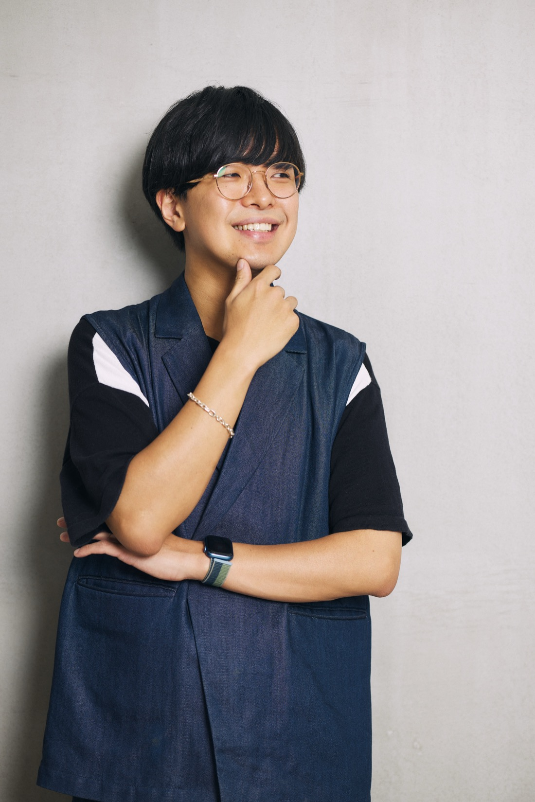
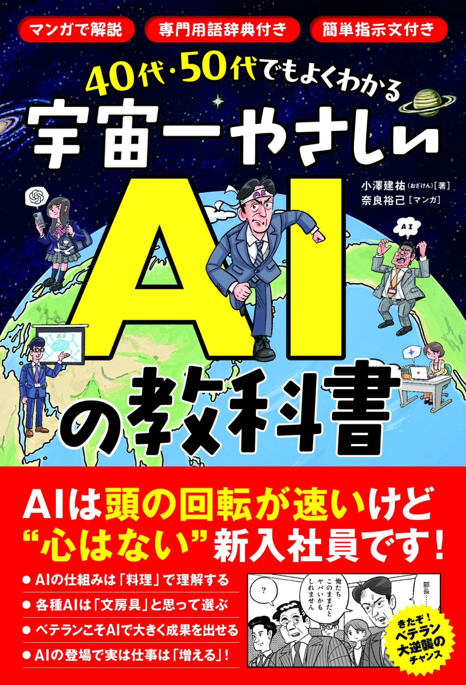
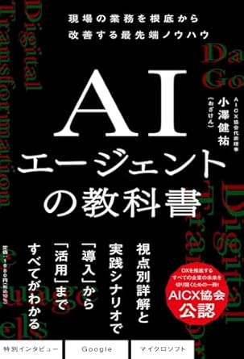
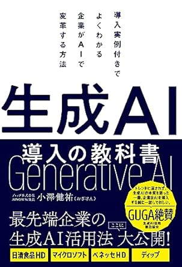
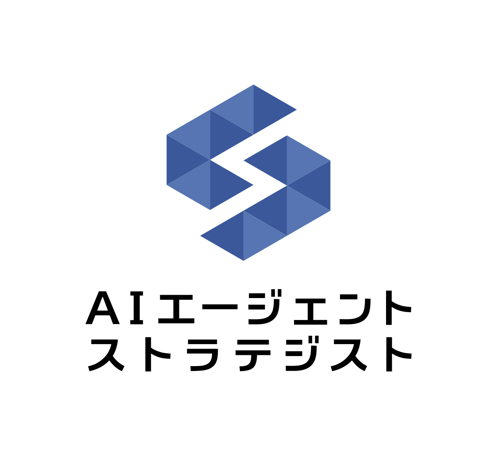

技術のことばを、経営の意思決定に。
経営のことばを、現場の手順に。
年間300回を超える登壇と、1,500本超の執筆。
登壇の予習・社内共有・研修資料として、どうぞご自由にお使いください。
技術・法規制・人材・組織・社会・産業・スタートアップの7領域を定点で追い、数字と仕組みまで確かめたものだけを載せています。裏の取れなかった話は「今週は載せなかったもの」として理由ごと残しています。
米国の労働者の52%が業務でAIを使う一方、AI導入済み組織では23%が5年内の職の消滅を懸念。EU AI Actで8月2日に始まったのは第50条の透明性義務だけ。千葉の一エリアでは連系待ちが約40件・2,500MW。今週は9本すべてで、平均ではなく「幅」が動いていました。
2026年8月18日号を開く →「知る → 選ぶ → 動かす」の流れで、登壇・執筆用の解説資料をテーマ別に整理しています。
AIをどう捉えるか。実装の成熟度・人間との関わり方・思想的な問い。
いまAIは何ができるか。モデルの使い分けと最新動向。
何を使うか。具体的なAI製品・サービスの解説。
現場でどう使いこなすか。個人が手を動かすAI活用。
組織にどう広げ、根付かせるか。施策・予算・資格制度。
働き方はどう変わるか。個人のキャリアと組織の人材。
どう守るか。AI活用に伴う法務・ガバナンス。
その業界では、どこにAIを置くか。目指す姿・課題・データ・KPIまで。
その職種では、何が変わるか。役割ごとの使いどころとKPIを整理。
国は何を決め、何を決めなかったか。日本・米国・中国・EUの戦略と、その比較。
数字で見るAI。導入率・投資・電力から、日米の雇用統計まで。一次情報だけを確認日つきで載せ、新しい発表が出るたびに差し替えます。
書籍・記事・登壇という3つの形で、AIの可能性と実践知を届けてきた。

発信し続けることが、
現場を掴む、いちばんの手段になる。
『生成AI導入の教科書』『AIエージェントの教科書』に続き、3冊目となる『40代・50代でもよくわかる 宇宙一やさしいAIの教科書』が2026年9月17日に発売。AI関連記事の執筆は1,500本を超え、登壇は年間300回を超える。発信量そのものが、現場で何が起きているかを掴む手段になっている。
一般社団法人AICX協会 代表理事として、企業のAIエージェント実装を業界横断で牽引。複数のAI企業の経営・アドバイザーに参画し、日本HP、NTTデータグループなど大手の実装現場にも伴走している。
NewsPicksのAI番組「AI DIVE」メインMC、千葉県船橋市 生成AIアドバイザーとして行政のDX推進にも携わる。NewsPicksプロピッカー、Udemyベストセラー講師、SHIFT AI公式モデレーター。AI領域以外では、2022年にCinematoricoを創業しCOOに就任。
「人間とAIが共存する社会をつくる」をビジョンに、著書3冊（3冊目は2026年9月17日発売）・AI関連記事1,500本以上・年間300回超の登壇を通じて、AIの可能性と実践的活用法を発信しています。メディア出演から行政アドバイザーまで、活動は多岐にわたります。
テレビ・映像：ABEMA Prime（レギュラー）、BS-TBS「報道1930」、テレビ東京「AIアカデミー」、日本テレビ「午前0時の森」ほか
ネット番組：NewsPicks「AI DIVE」メインMC、「The UPDATE」、RehacQ、ホリエモンチャンネル、Schoo ほか
ラジオ・音声：J-WAVE、ニッポン放送、Voicy「ながら日経」
新聞・雑誌・Web：日経・読売新聞、東洋経済／ダイヤモンド／プレジデント各オンライン、ITmedia、DIME、宣伝会議 ほか
主要カンファレンス：AI Agent Day（主催・登壇）、IVS 2024／2025、AI・人工知能EXPO（特別講演）、Dell Technologies 基調講演、HP Future of Work、Startup JAPAN 2025、慶應「生成AIラボ」ほか
企業・自治体：ソフトバンク社内講演、船橋市役所、鹿児島県商工会議所、電通インターンシップ（基調講演・審査員）
大手企業の社内講演（社名非公開）：大手電力会社／大手自動車メーカー／大手半導体製造装置メーカー ほか



著書：『40代・50代でもよくわかる 宇宙一やさしいAIの教科書』（2026年9月17日発売）／『AIエージェントの教科書』（2025年8月・ワン・パブリッシング）／『生成AI導入の教科書』（2023年9月）
経済産業省：「AX時代におけるスキルのあり方検討ワーキンググループ」委員（2026年4月〜）
自治体：大分県 フェロー、千葉県船橋市 生成AIアドバイザー
企業顧問・アドバイザー：日本HP 顧問、NTTデータグループ アドバイザー、Lightblue 顧問、THA 顧問、Google Gemini アドバイザー（旧）ほか
その他：NewsPicks プロピッカー、Udemy ベストセラー講師、SHIFT AI 公式モデレーター
主な講演テーマ：AIエージェントが変えるビジネスの未来／生成AI活用術／AI時代のリスキリング戦略／AIがもたらすCX革命／経営者が知るべきAIの本質／AI×地方創生／メディア業界のAI活用／AIエージェント時代の働き方改革 など
軸足を置く業界団体はAICX協会ひとつ。評論ではなく実装で、日本のAIエージェント活用を前に進める。

代表理事 / Founder「分断を超え、体験を変える」を掲げる、国内初のAIエージェント特化型の業界団体。 AI Agent Day（累計約2万名）やAICX Forumの開催、委員会運営、メディア「AI Agent Now」の発信、 そして人材の"格"を定義する認定資格制度まで——企業がAIエージェントを実装しきるための土台をつくっている。
Fig.1 ── AIエージェント × 業務変革 × 組織変革。3本柱がそろって、実装は事業価値になる
技術（AIエージェント）だけでも、掛け声（組織変革）だけでも実装は進まない。3本柱を貫いて設計するのがストラテジストの役割だ。

AIエージェント・業務変革・組織変革の3本柱を貫いて設計し、企業のAI実装を事業価値に変える戦略人材の認定。
認定資格の詳細（AICX公式）→
必要な理由を読む →
コンテキスト・ハーネス・ループを実装する技術人材の認定。ストラテジストが描いた設計図を、実際に動くエージェントへと落とし込む役割。
世の中の議論は「AIを使いこなせる人になろう」に偏りすぎている。だが年間300回以上現場に立って断言できるのは、 自律型エージェントの時代に効くのは設計する力だということ。AICXでストラテジスト認定をつくったのは、その職能に名前と基準を与えるためだ。
AICX協会の活動、AIエージェント・ストラテジスト／アーキテクト認定の導入に関するお問い合わせは、AICX協会 公式サイトの窓口より承っています。
AICX協会 公式サイトへ →「どのツールを入れるか」ではなく、「どの業務を、どの順番で任せるか」から一緒に設計します。経営層向けの戦略講演から、現場のハンズオンまで、フェーズに合わせて構成します。
講演・研修、顧問・アドバイザーのご相談は、ポートフォリオサイト、またはX（@ozaken_AI）のDMより承っています。
小澤健祐（おざけん）／ AICX協会 代表理事・Cynthialy 取締役CCO・Cinematorico 創業者COO。経済産業省「AX時代におけるスキルのあり方検討WG」委員。